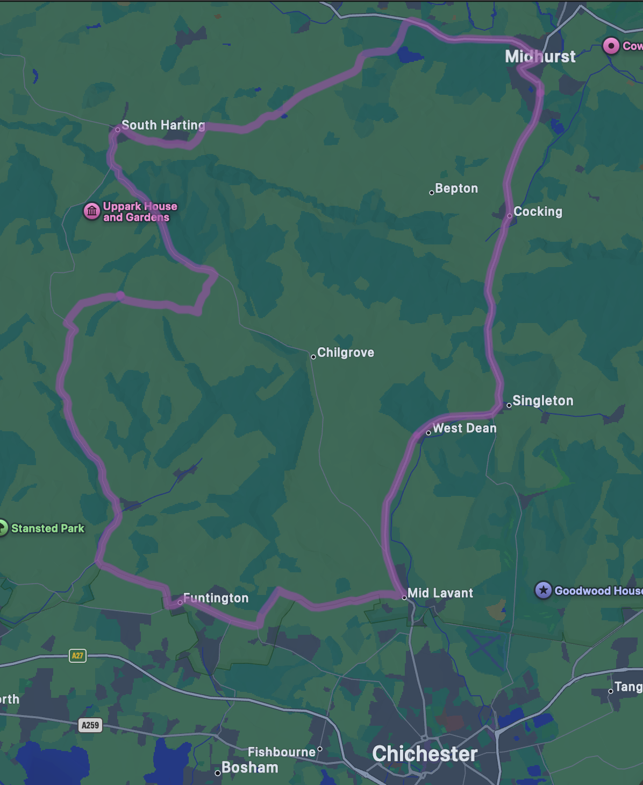
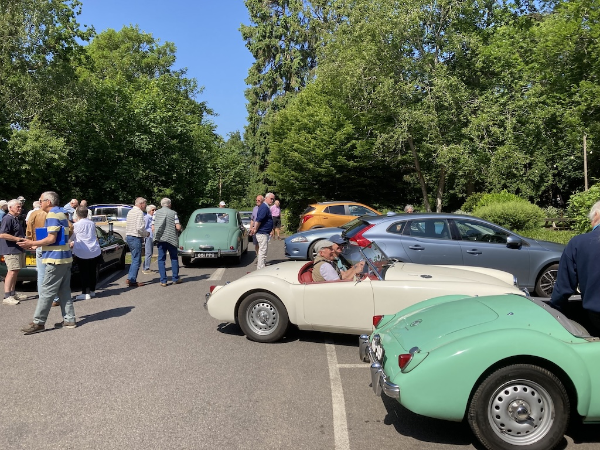

Sussex Wanderers, West Dean to West Dean - 9th April
Last summer, not only were we away for some of the time, but TC4985 was at Milestone Classics at Wisborough Green so that they could try to find a buyer. They didn't! But it meant that I missed a number of runs, including the South Downs Run (although I marshalled and Angela helped in the cafe). In the spring of this year I discovered that two of the brake slave cylinders were leaking, so decided to replace them all, along with the flexible hoses. So this was the first real outing of the year.
It was a fine, sunny day, albeit a little chilly, and I started by driving to Lyminster, via Long Furlong, to pick up David F-B, who was going to navigate. Due to a long queue at Crossbush we took a more scenic route to West Dean, where we met up with the rest of the Wanderers. So far that was 38 miles. After coffee and a chat we went off on the circular route shown here, another 32.5 miles, before lunch.
David needed to go to Petworth to pick up his TR4A from a garage, so I dropped him there and then drove home via Pulborough and Storrington. In total the TC did 105 miles and ran very well.
Sussex Wanderers, Warnham and back to Warnham - 14th May
Another quite long run on a beautiful day. I had no navigator so I set off in the TC for Warnham, just to the west of Horsham. I discovered that Peter and Margaret's TC was overheating, so they had decided not to take it on the run, but, after lunch, to nurse it back to Godalming. Consequently they split up and over coffee we agreed that Margaret would navigated for me. There was a good selection of MGs in the Royal Oak car park. You can just about see my TC parked up at the back.
Unfortunately, after missing a turn and so losing a steam of MGs, we came across a road closure, which I was assured hadn't been there the day before. So we headed north to the A25, into Dorking and back down the A24 to Warnham. This, it turned out, was not the best route and not only did we miss the last part of the route but it added 15 miles to the journey. Overall I drove the TC 80 miles and it ran well, although when I went to start the car at Warnham, the slow running adjustment wouldn't work.